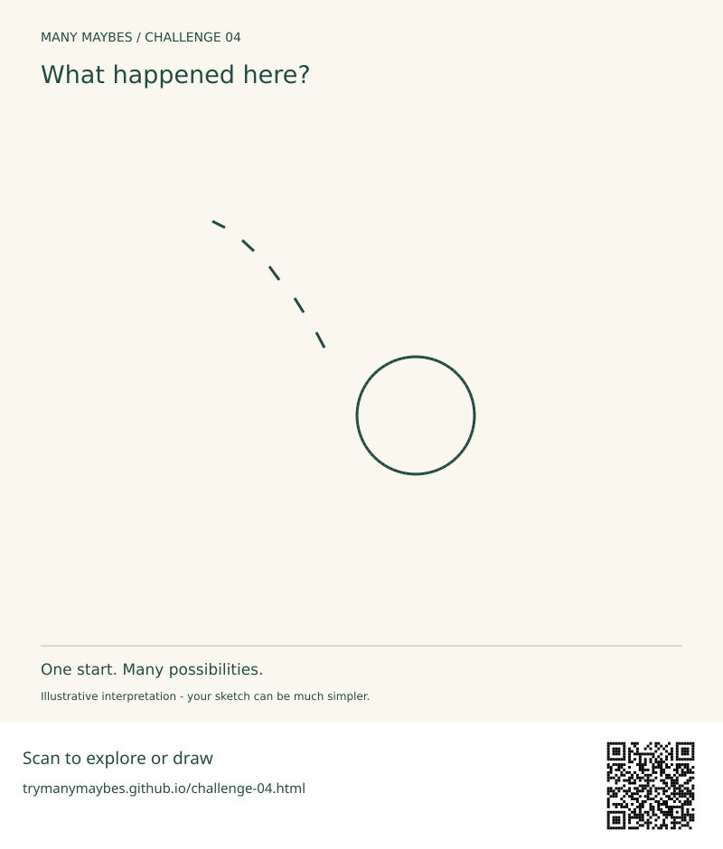

Challenge 04 · Infer time from visible traces
What happened here?
One circle and a broken trail. Can you make us imagine an event before or after this moment?

Your challenge
- Preserve the circle and all five short strokes, in their original relative positions.
- Add context, colour, texture and new marks; keep every starter mark visible.
- You may rotate or uniformly resize the whole starter only.
- Suggest a past or future event with at least two visual clues. No written explanation is required inside the picture.
Beginner route: list three ideas, then add just three clues to one. Drawing skill is optional; words, simple sketches and collage count.
Use freehand tools or turtle code in your browser. No installation or account needed.


Printable worksheet is being prepared for this release.
Try before you peek?
Pause here if you want to discover your own interpretation first. When you are ready for inspiration, open this challenge’s section in the gallery. There is no single correct answer.
Optional progressive hints
- Name your first assumption.
- Infer time from visible traces. What evidence would make that reading plausible?
- Add one detail that changes the meaning of the whole image.
Reflect
Which marks are objects, and which are evidence of change? What happened just before your picture?
Why this challenge?
Challenge 03 used size cues. Now use traces and causes to make a still drawing suggest time.
Share when ready
Keep your sketch and a sentence about what changed. Direct website uploads for this challenge are not enabled yet. You can share your own work on Instagram and tag @trymanymaybe. Tagging does not automatically add your work to the gallery.
Explore the challenge collectionReady to see other possibilities?
Explore three illustrated interpretations and the thinking behind them. Your idea can be completely different.
Explore Challenge 04 in the gallery →This possibility is now in the gallery. View the example →
This possibility is now in the gallery. View the example →
This possibility is now in the gallery. View the example →